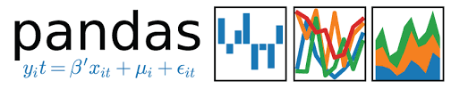

最近在学python，正好看到一个讲解pandas的系列视频，正好做一下笔记,笔记会参考视频，同时也会参考pandas官方文档。
什么是pandas
pandas is an open source, BSD-licensed library providing high-performance, easy-to-use data structures and data analysis tools for the Python programming language.
完整的文档可以查看pandas的Cookbook
视频地址:
bilibili-使用 pandas 进行数据分析：Data analysis in Python with pandas
环境安装
- 安装python环境
- 安装pandas
python 环境的安装，可以看之前的文章，在centos7上安装python。
pandas安装：
1.Mac上使用brew brew cask install anaconda
2.python -m pip install pandas https://pypi.douban.com/simple/
推荐使用第一种，anaconda的方式安装，比较方便
使用第二种的话，需要下载额外的一些包，需要根据实际情况进行下载，例如matplotlib;
视频使用的资源
[百度网盘]](https://pan.baidu.com/s/1UVT_S9BHJZS8ktjAc8Xpcw) 密码：dr78 （来自bilibili用户）
视频中的网络资源无法使用，可以使用上面百度网盘中的资源，或者使用我提供的地址
目录
1.读取表格数据到pandas中(源码见demo1.py)
1 | #!/usr/bin/env python |
2.从csv中读取数据(源码见demo2.py)
1 | #!/usr/bin/env python |
总结：
上面的代码涉及视频p1-p3，讲解了pandas如何读取数据，从table、csv中读取数据，并在pandas中组合出一些数据，这些过程涉及
生产数据、获取数据、准备数据几个过程，在实际的使用过程中，用户的操作，或者是其他过程会产生大量的数据，然后获取数据读取到
pandas中，并对数据进行清洗，取出掉无效或者错误的数据，之后最数据进行更深入的分析。